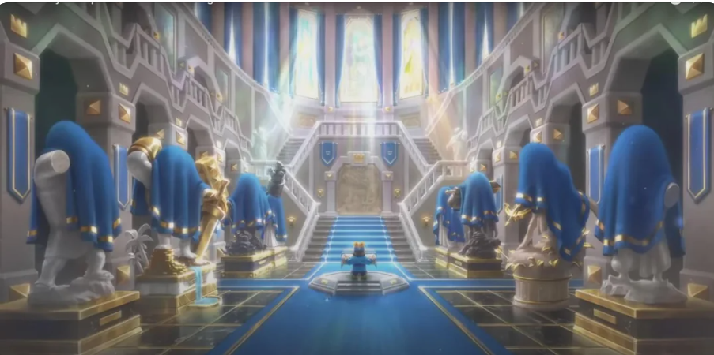
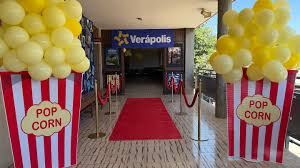
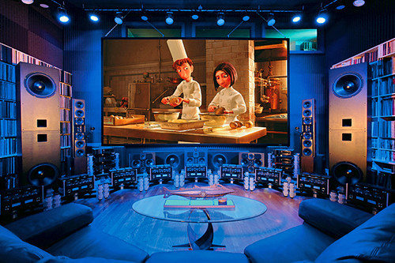
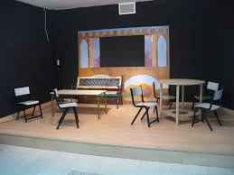
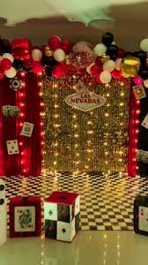
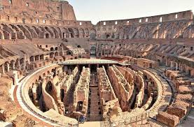
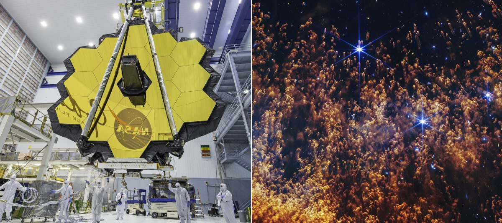
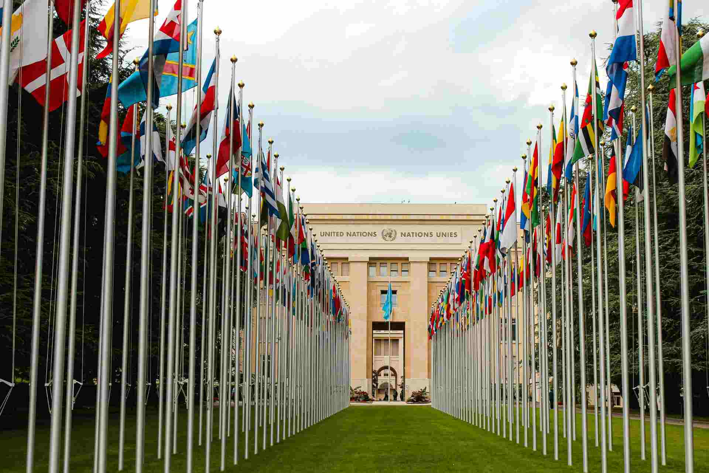
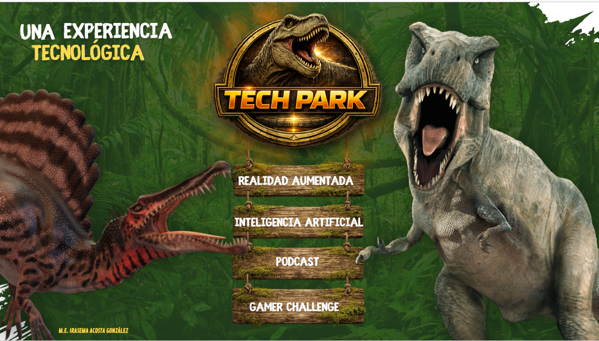

Brindar una experiencia interactiva inspirada en Clash Royale, donde los visitantes asuman el papel de reyes y participen en batallas estratégicas a gran escala. A través de esta dinámica, se promueve el pensamiento estratégico, la toma de decisiones, la resolución de problemas y el trabajo en equipo, demostrando el potencial educativo de los videojuegos y la innovación tecnológica.


The Golden Screen Cinema room will take visitors on a journey through the history of cinema, exploring iconic films, influential actors and directors, and the technological advances that shaped the industry. Through exhibits and student presentations, guests will discover the cultural and historical impact of cinema while enjoying an educational and interactive experience.
Fortalecer el aprendizaje del idioma francés mediante experiencias interactivas que permitan a los estudiantes conocer la cultura, las tradiciones y la diversidad de los países francófonos. A través de este espacio, los alumnos desarrollarán habilidades comunicativas y una visión intercultural con perspectiva global.


La sala de teatro es un espacio diseñado para la presentación de obras, representaciones artísticas y actividades culturales. En este lugar, los estudiantes tienen la oportunidad de desarrollar su creatividad, expresión oral, trabajo en equipo y confianza al participar en diferentes proyectos escénicos. Además, la sala de teatro fomenta el gusto por las artes y contribuye al desarrollo integral de la comunidad escolar
Es una actividad que permite aprender matemáticas de forma divertida y práctica. A través de juegos, se fortalecen el cálculo mental, el razonamiento lógico y la resolución de problemas. Además, se aplican conceptos como probabilidad y operaciones matemáticas.


Favorecer en los estudiantes el conocimiento y la valoración de las civilizaciones griega y romana mediante una experiencia interactiva que les permita reconocer su legado en el arte, la filosofía, la ciencia y la organización social. A través de la investigación y el uso de herramientas tecnológicas, los alumnos fortalecerán su pensamiento crítico y comprenderán la influencia de estas culturas en la actualidad.

es una sala que tiene como objetivo identificar y explorar el origen, estructura y fenómenos del universo —desde el Big Bang, el sistema solar y elementos del universo como agujeros negros, cuásares, hasta los avances en sondas y telescopios espaciales— mediante proyectos situados en el Campo formativo Saberes y Pensamiento Científico, vinculando el conocimiento astronómico con los ejes articuladores de Pensamiento Crítico e Interculturalidad, para desarrollar una conciencia cósmica que les permita valorar el lugar de la humanidad en el universo y su responsabilidad con la vida en la Tierra.
En esta sala descubrirás cómo los Derechos Humanos, la ONU y los tres poderes contribuyen a la construcción de sociedades justas y democráticas. A través de este recorrido comprenderás que la ciudadanía no solo se ejerce a nivel mundial, sino también en las acciones que realizamos cada día para transformar positivamente nuestra comunidad.

Comprender la importancia del ADN como la molécula que almacena la información genética de los seres vivos, mediante una experiencia interactiva tipo museo que permita a los visitantes explorar la relación entre los elementos químicos, las células, el ADN, los cromosomas, la división celular y los avances científicos como la clonación.
La Experiencia Tecnológica es una muestra interactiva donde los alumnos presentan los conocimientos y habilidades adquiridos durante el ciclo escolar mediante actividades de inteligencia artificial, realidad aumentada, creación de contenido digital y análisis de datos, promoviendo la creatividad, el pensamiento computacional y la aplicación práctica de la tecnología.
